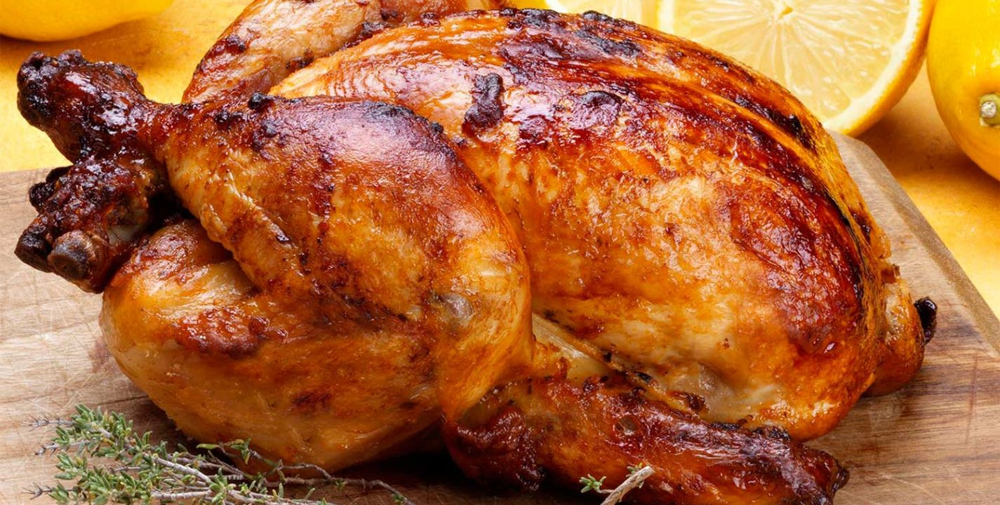

Pollo al horno
Receta de pollo al horno casero

Ingredientes
- 1 pollo
- 1 horno
- condimentos al gusto
- Sal
Elaboración (pasos)
- Lavar el pollo.
- Meter el pollo al horno.
- Esperar unos 20 minutos.
- Acompañar con sus patatas fritas, Inka Kola y cremas al gusto.
Volver al menú anterior